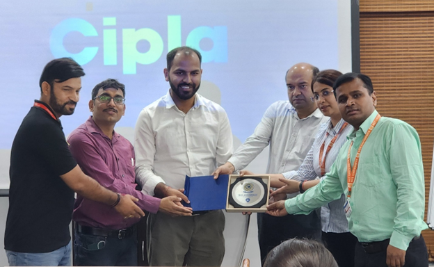

Students were received by Mr. Atul Awasthi, HR Head, CIPLA after undergoing security protocol.
After refreshments the students were divided in two groups and were lead by QC heads into the various parts of the manufacturing units.
A presentation about the company and its various manufacturing activities was given by by Mr Atul Awasthi to the students.
The tour provided a firsthand glimpse of the diverse machinery employed at CIPLA. The students witnessed high-speed tablet presses churning out various medications in precise shapes and sizes. The functionality of blister packaging machines forming individual protective pockets for tablets and capsules was particularly interesting. CIPLA also utilizes sophisticated liquid filling equipment to ensure accurate and efficient dispensing of liquid medications.
The tour included insightful discussions within several key departments:
•CIPLA prioritizes product and equipment sterility through various methods:
The students interacted with Quality control and Production heads and gained insights into the various aspects of manufacturing and quality control. After that the organizers gave vote of thanks to the presenters alongwith a memento.
 A Valuable Learning Experience: The industrial tour to CIPLA Ltd. proved to be an invaluable learning experience. Witnessing the complex yet precise processes involved in pharmaceutical manufacturing, coupled with the understanding of stringent quality control measures, provided a deeper appreciation for the dedication and expertise required in this crucial industry.At ADMED Pharma Ltd., students gained further insights into pharmaceutical manufacturing, with a focus on quality assurance and quality control measures.
The students were received by Mr Surinder, Director ADMED Pharma Ltd. The students were divided into two groups and then they lead inside the different departments of the manufacturing unit. The students gained firsthand experience of the various facets of manufacturing and tour highlighted the complexity and precision required to bring pharmaceuticals to market.
Machinery Operations:
Departmental Functions:
Production Department: Manufactures pharmaceuticals according to formulations and quality standards. Key stages include blending, granulation, compression, and coating.
Quality Assurance/Quality Control (QA/QC): Monitors and evaluates product quality throughout production via rigorous testing and analytical techniques to ensure compliance and product integrity.
Sterilization Processes:
Warehouse storage of packaging materials in the pharmaceutical industry is crucial to maintain product quality, integrity, and regulatory compliance. Here are some key practices typically followed in warehouse storage of packaging materials:
Proper Segregation: Different types of packaging materials, such as containers, labels, cartons, and inserts, should be stored separately to prevent cross-contamination and ensure easy identification and access.
Temperature and Humidity Control: Warehouse facilities should have controlled temperature and humidity levels to prevent damage to packaging materials. Certain materials may require specific storage conditions, such as cool and dry environments for stability.
Labeling and Documentation: Each packaging material should be properly labeled with details such as batch numbers, expiry dates, storage conditions, and handling instructions. Detailed documentation of incoming and outgoing materials is essential for traceability and regulatory compliance
Coordinators presented a memento to Mr Surinder, Director ADMED as a vote of thanks gestureThe industrial tour to ADMED Pharma Ltd. provided valuable insights into the pharmaceutical manufacturing process, including machinery operations, departmental functions, sterilization processes, quality assurance and control measures, and warehouse storage practices. This firsthand experience highlighted ADMED Pharma's commitment to producing safe, high-quality pharmaceutical products while adhering to stringent regulatory standards and ensuring product integrity throughout the supply chain
Kheer Ganga is a popular trekking destination located in the Parvati Valley of Himachal Pradesh, India. It is known for its scenic beauty, lush greenery, and hot water springs. The trek to Kheer Ganga starts from the village of Barshaini and usually takes around 5-6 hours to complete, depending on your pace. Along the way, you'll pass through beautiful forests, small streams, and breathtaking views of the surrounding mountains. The hot water springs at Kheer Ganga are believed to have healing properties and are a major attraction for trekkers. Overall, Kheer Ganga offers a unique and memorable trekking experience in the lap of nature.
Trekking to Kheerganga is an amazing experience! The journey typically starts from Barshaini, and the trail takes you through lush forests, picturesque landscapes, and stunning mountain views. The hot springs at Kheerganga are a major highlight, offering a relaxing and rejuvenating experience after a long trek. The overall trekking experience is both challenging and rewarding, making it a favorite among adventure seekers and nature lovers alike.
Embarking on a trekking adventure to Kheerganga was an experience that surpassed all expectations and left an indelible mark on students memory. Set amidst the breathtaking landscapes of the Himalayas, this journey of exploration and discovery was made possible by the unwavering support and encouragement of our college. As I reflect on this unforgettable experience, students filled with a profound sense of gratitude for the opportunities afforded to them by our college.
During our stay in Kheerganga, our accommodation was a rustic, yet comfortable camp nestled in a scenic location. The camp, surrounded by towering trees and panoramic mountain views, offered a serene setting for relaxation and reflection after a day of trekking. The tents were spacious enough to provide comfort while maintaining the sense of adventure that comes with camping in the wilderness. Each tent was equipped with sleeping blankets and basic amenities, ensuring we had a restful night's sleep despite the cool mountain air.
The campgrounds featured a communal dining area where we gathered for meals, sharing stories, and enjoying hearty food that warmed our souls. The sense of community was palpable as we sat around a crackling campfire, sharing our experiences and building bonds with fellow trekkers. The camp also had a designated space for meditation and yoga, allowing us to connect with nature and embrace moments of mindfulness amidst the breathtaking surroundings.
Our four-day expedition in Himachal Pradesh reached new heights with an exhilarating excursion to Sissu and Koskar. These captivating destinations unveiled the state's mesmerizing landscapes and rich cultural tapestry.
Sissu: A Feast for the Senses
Koskar: Unveiling Rural Charm
The excursion to Sissu and Koskar was a soul-stirring journey. The blend of breathtaking natural beauty, cultural immersion, and rural charm left us with unforgettable experiences and cherished memories. As we departed these enchanting destinations, we carried a profound appreciation for their beauty and a deep sense of gratitude for the warmth and hospitality of their people. The timeless allure of Himachal Pradesh was further etched in our hearts